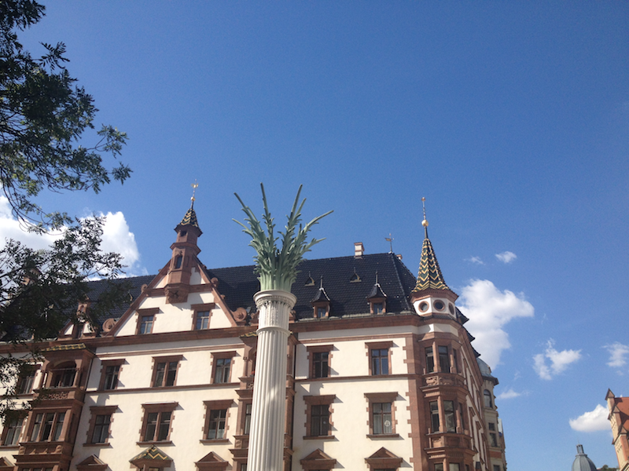
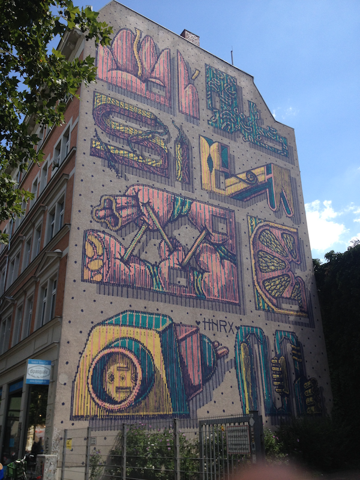
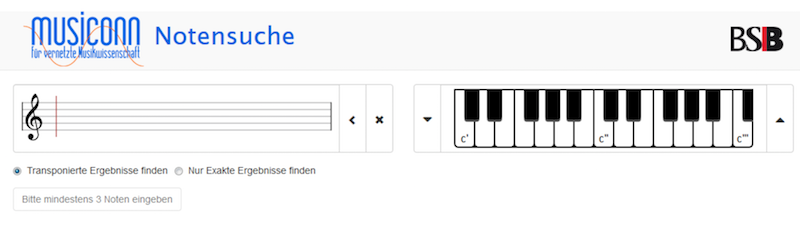
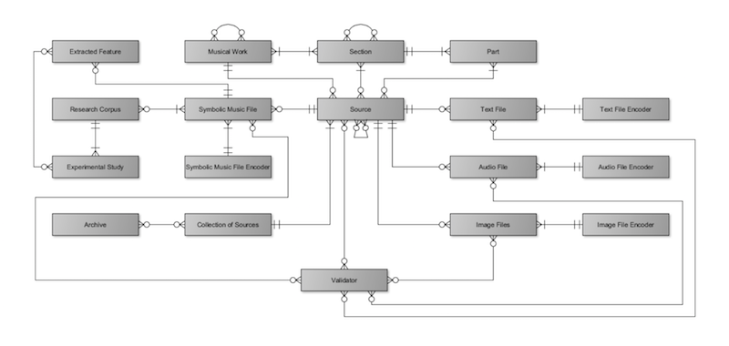
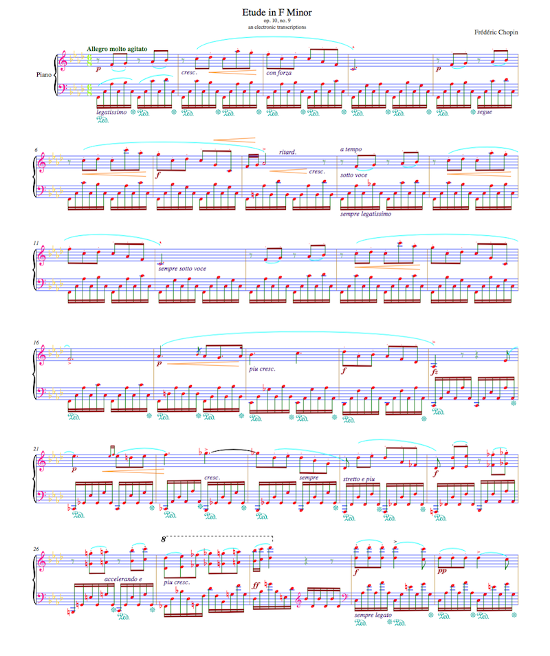
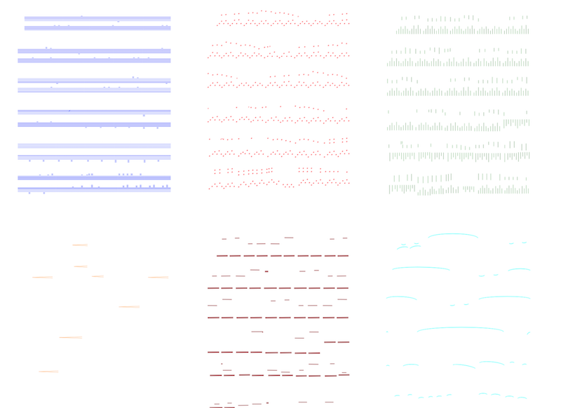
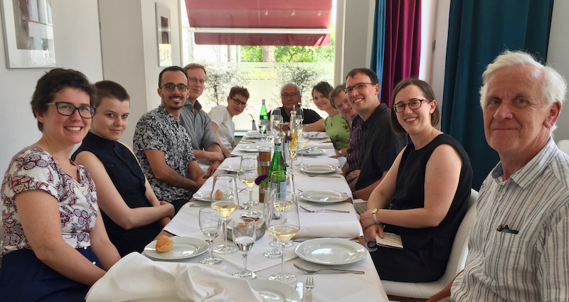
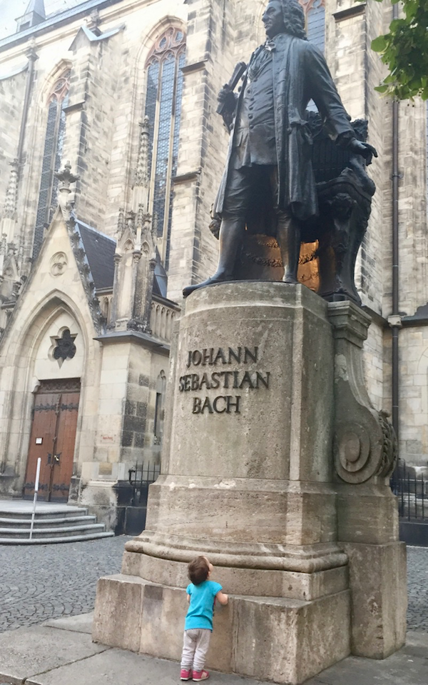

A Trip to Leipzig: SIMSSA XV and IAML
Posted by ehopkins on August 30, 2018
Our fifteenth SIMSSA Workshop took place in Leipzig on 28 July 2018 immediately following the annual congress of the International Association of Music Librarians! Many of our partners and collaborators work in music libraries so it was a great chance to meet some of them and update each other on our work. In addition to my work for SIMSSA, I am also doing my MLIS, so it was really wonderful to get to meet so many people working on different aspects of librarianship and music. It was also fascinating to get a chance to learn more about Leipzig’s history as a centre for classical music and also as part of East Germany.

The Nikolaikirche downtown. Bach worked here as well as the St. Thomas church, and it was also the site of the Monday demonstrations, peaceful protests against the German Democratic Republic from 1989-1991.
The IAML Congress started on 22 July and continued all week, with SIMSSA XV taking place on Saturday. There was also some time to explore Leipzig (see image below of a mural in Plazwig.) There were too many interesting talks to cover everything, but I’ll share some personal highlights below.

I got to attend a RISM training session led by Jennifer Ward on their online music cataloging software, Muscat. This was especially interesting to me for our work in the lab designing the new and improved SIMSSA Database this summer (more on that later…). One of the most interesting features is how Muscat integrates VIAF data into its cataloging practises. VIAF is the Virtual International Authority File, uniting the collections and cataloging processes of libraries around the world with unique identifiers, making it possible to have linked data approaches to music databases.
Carolyn Doi presented on research she’s doing with Sean Luyk through a SSHRC-funded project called Sounds of home: local music collecting and collections in Canada. In the presentation, Carolyn shared some results from the midway point of their project, highlighting survey responses from libraries with local music collections. Their project includes documenting and describing local music collections, exploring who uses them and for what purposes, and ways to support local collections. This includes asking questions about respectful ways to engage with communities and music from traditionally marginalized groups and underrepresented communities. How can music be preserved in a respectful and inclusive way?
Lynnsey Weissenberger shared her work on LITMUS, the Linked Irish Traditional Music Database, a project of the Irish Traditional Music Archive. This two-year project involves the development of a traditional music database and an appropriate linked data ontology for Irish traditional music to go with it. Linked data triples allow for the description of relationships between tunes or other source materials – for examples, stories or poems associated with a tune, or which collections it can be found in. This database also makes use of Traditional Knowledge labels (Here is an example of these labels in context in a Library of Congress entry: Passamaquoddy War song; Trading song). There is also great potential for the work done on LITMUS to be used for databases of other traditional music in the future.
Cecile Cecconi presented on Music and Linked Open Data: Results and Lessons Learned from the DOREMUS project. Doremus is short for Doing Reusable Musical Data. Their work includes an ontology for linked data, multilingual controlled vocabularies, and different approaches to music metadata. The Doremus ontology is available on GitHub here. Cecconi also discussed Yam++, a web tool for ontology and thesaurus matching, and even demonstrated a Doremus chatbot that uses natural language processing to try to answer music questions.
After the main congress was over, SIMSSA XV took place on Saturday, in the University Library at the Hochschule für Musik und Theater.

First up, Ichiro Fujinaga gave a brief welcome and introduction to the workshop. Next, I (Emily Hopkins) presented an overview of the SIMSSA project, including a technical explanation of our goals as well as an update on current research projects, including Karen’ Desmond’s Measuring Polyphony Project. Slides are available here.
Jürgen Diet gave a talk on The OMR Project of the Bavarian State Library. He gave an overview of their OMR project, including hiring Sanu Pulimootil to work on the project. They tested OMR software such as Audiveris, Capella Scan, SharpEye, and SmartScore. From this, they developed a set of OMR results using the BSB’s digitized score collection, and then built a search interface that uses a keyboard for musical queries (see below).

Cory McKay introduced SIMSSA DB: A Database for Computational Musicological Research. This database is for storing and organizing symbolic music files and research studies, dealing with the best ways of handling metadata for a wide range of musical materials. His presentation gave an overview of the considerations that went into the new data model as well as the progress we’ve made this summer. Here is the entity-relationship diagram for the database:

Next, Laurent Pugin gave us an update on the latest developments in Verovio, including harmonic annotations, better handling of trill extensions and text that extends across multiple barlines, and PDF score output. You can see his slides here. He also showed a neat example of how you can separate the layers of different kinds of symbols. Here they are highlighted:

And then separated into layers like the kind we use for our OMR process:

Finally, Ichiro Fujinaga gave a detailed overview of how the SIMSSA OMR process works, showcasing the progress our summer students have made in the lab this year at McGill.
After the workshop, several workshop participants went out for lunch at a nearby restaurant.

*L-R:* Emily Hopkins (McGill), Sonia Wronkowska (National Library of Poland), André Avorio (Alexander Street Press), Laurent Pugin (RISM-CH), Jane Gottlieb (The Juilliard School), Ichiro Fujinaga (McGill), Barbara Dobbs Mackenzie (RILM), Craig Sapp (Stanford University), Cory McKay (Marianapolis College), Erin Conor (University of Washington, and Tim Crawford (Goldsmiths, University of London)).
It was a real pleasure to attend my first IAML and visit Leipzig. Thank you to everyone I met and also who attended the SIMSSA Workshop – be sure to let us know if you’re ever in Montreal!
I will leave you with a final picture of the smallest Montreal IAML delegate paying her respects to Leipzig’s most famous resident.
